Cantera labrada
a tu medida
Columnas, capiteles, altares, fuentes, esculturas, laminados y bloques de cantera para casas, templos, negocios y jardines.
Cotizar por WhatsApp Ver materialesMateriales
Cada piedra tiene su color y carácter. Te ayudamos a elegir la ideal para tu obra.
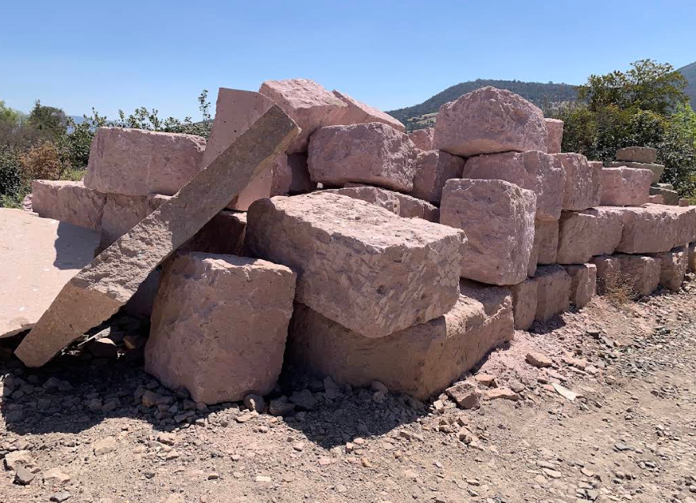
Cantera rosa
Tono cálido y rosado, muy buscada para fachadas, arcos y muros.
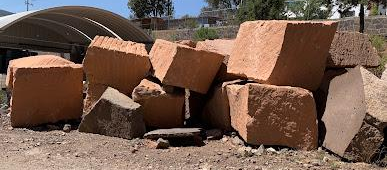
Cantera naranja
Color terracota con carácter, ideal para barandales, columnas y detalles.
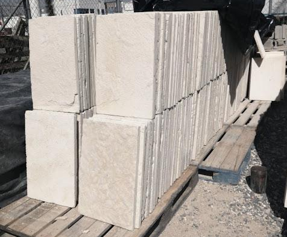
Cantera crema
Tono claro y luminoso para pisos, muros y piezas decorativas.
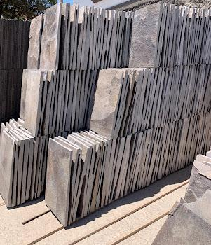
Cantera gris
Aspecto sobrio y natural, en lajas para pisos, muros y fachadas.
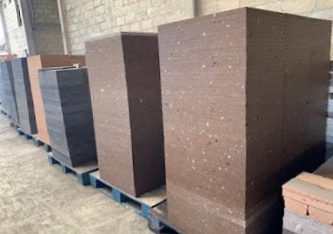
Laminados café
Placas en tono café para pisos y revestimientos.
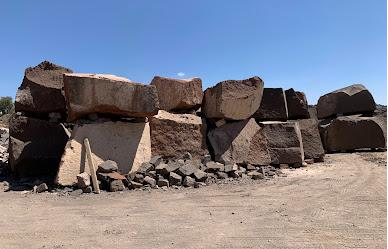
Peñas y bloques
Bloques en bruto, listos para cortar o labrar a tu medida.
Lo que hacemos
Trabajo artesanal con acabado profesional.
Columnas y capiteles
Columnas rectas o torcidas y capiteles con relieves labrados.
Altares y ambones
Piezas litúrgicas con relieves y detalles labrados a mano.
Barandales y balaustres
Piezas para terrazas, escaleras, bardas y balcones.
Fuentes y esculturas
Fuentes, animales y figuras talladas a mano.
Laminados y lajas
Placas de cantera para pisos, muros y revestimientos.
Tallado personalizado
Escudos, relieves, placas y figuras según tu diseño.
Nuestros trabajos
Piezas terminadas y material disponible.
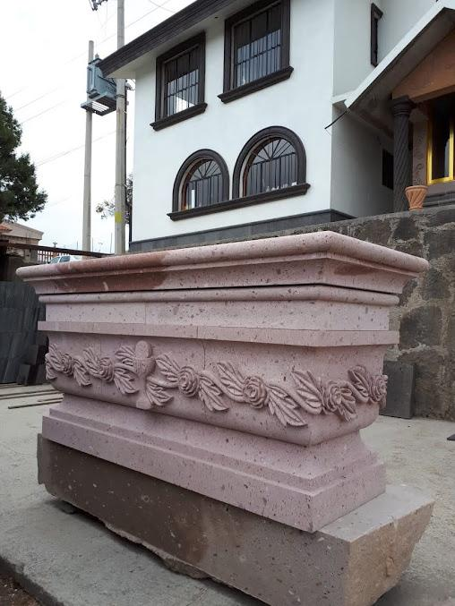
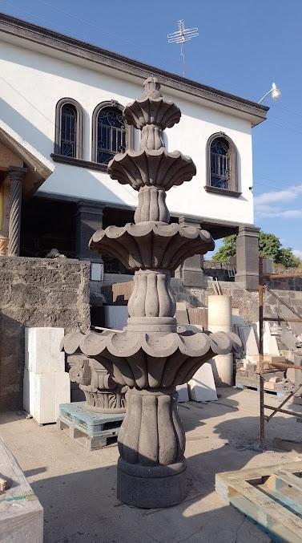
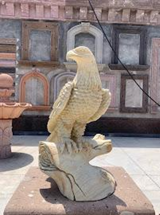
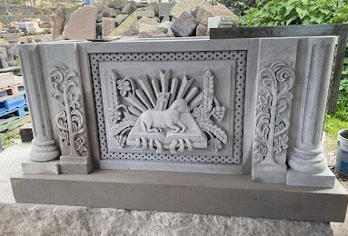
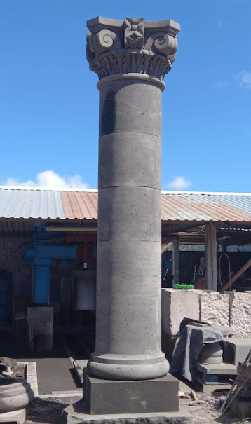
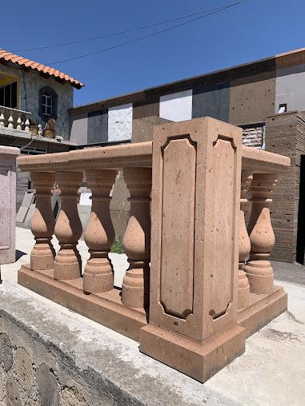
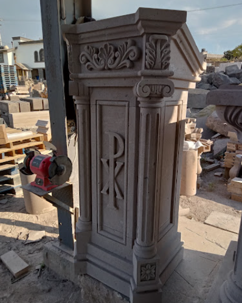
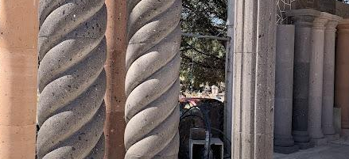
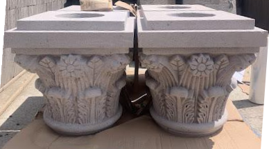
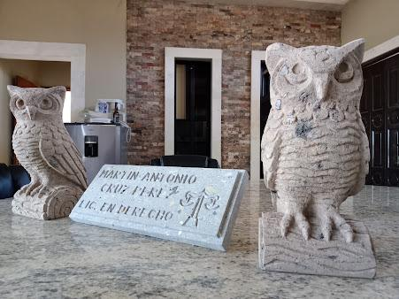
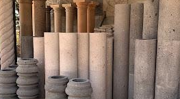
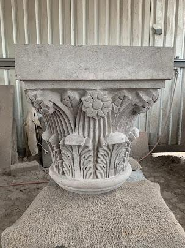
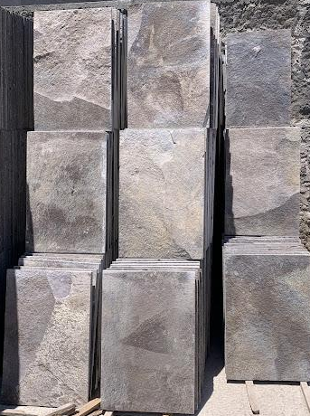
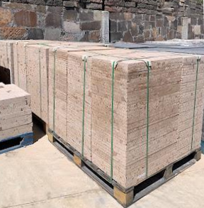
Muestrarios
Conoce las piezas y los materiales en persona.
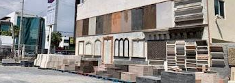
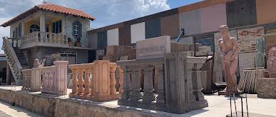
Cómo trabajamos
De la idea a la obra terminada.
Cuéntanos tu idea
Escríbenos por WhatsApp con medidas, fotos o un boceto.
Recibe tu cotización
Te damos precio y tiempo estimado, sin compromiso.
Fabricamos y entregamos
Labramos tus piezas y las llevamos a tu obra.
Cotiza tu proyecto
Envíanos tus medidas o una foto y te respondemos lo antes posible.
Escribir por WhatsAppMuestrarios en Saltillo, Coahuila y Tlalpujahua, Michoacán
Ver ubicación en Google Maps